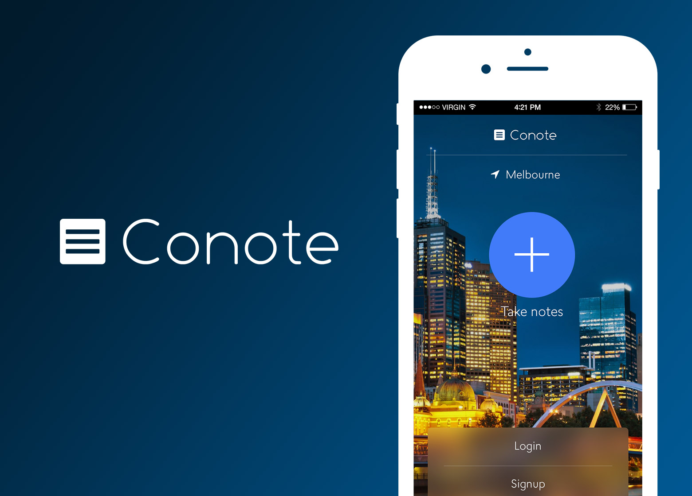
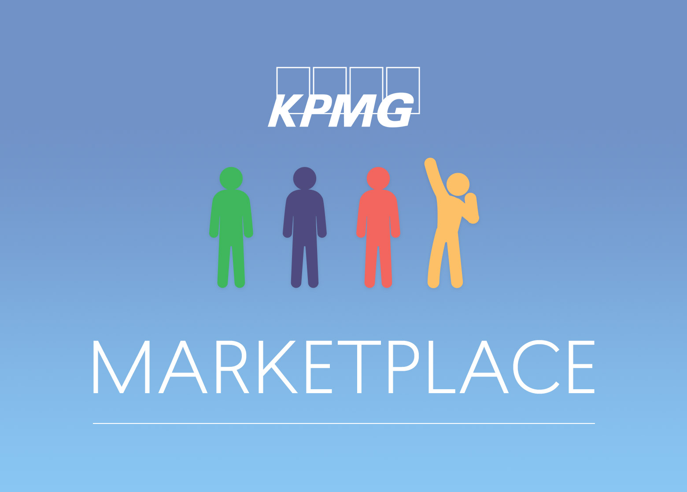
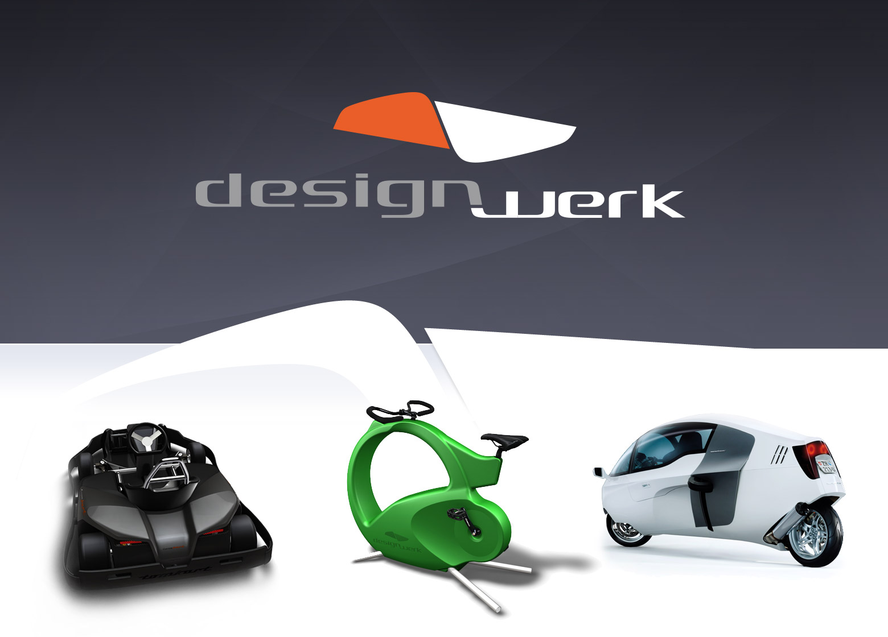

I like to design and code



a bit about me
A UX designer at heart with a fascnitation for front-end development.
Born in Auckland, New Zealand, I've travelled the world since the age of 25, working at various media agencies and startups primarily in London, Amsterdam, Lisbon and Melbourne.
I particularly love working with startups, where I can conceptualize, design and build a product from the ground up. Something that you and your team can call your own and experience the sense of achievement as it expands under your feet.
Photoshop and Illustrator are my weapons of choice when in design mode, but I lap up any chance I get to sink my teeth into front-end development. I believe in the importance of knowing how the web works before putting pencil to paper. It's a huge advantage knowing what's possible and what the tradeoffs are to make the tricky ideas work. As mobile usage takes the podium, responsive design has never been so vital. Foundation, SASS and Compass are a few of my personal favs that have helped create speedy and solid responsive platforms.
The gallery above includes some of my latest highlights. For older works please check out my portfolio v1.0. Feel free to check out my code on github or get in touch with me via email.